Seleção do Grupo G
Brasil
O Brasil é o único país do mundo que participou de
todas as Copas do Mundo (19 edições), conseguindo no total de 5 titulos.
| Técnico | Principais Jogadores |
|---|---|
| Tite 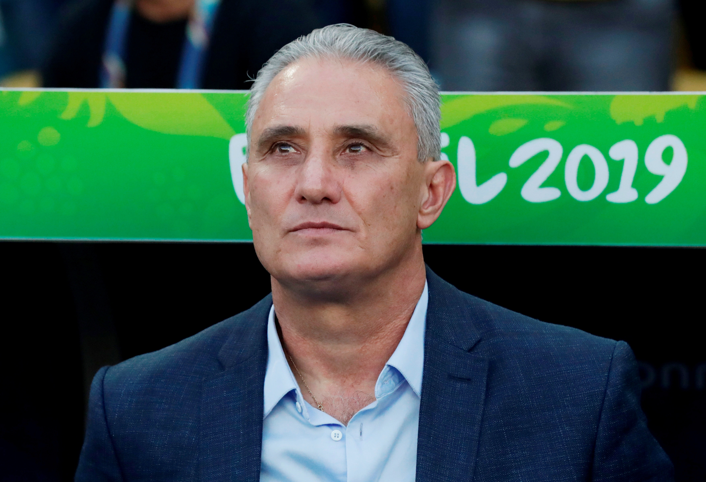 |
Gabriel Barbosa  |
Daniel Alves  |
|
Alex Sandro  |
Sérvia
A Sérvia é atual 25ª colocada no ranking da Fifa. Tem 12 participações em Copas,
As melhores campanhas foram os quartos lugares em 1930 e 1962. A equipe caiu nas semifinais das duas edições do Mundial.
| Técnico | Principais Jogadores |
|---|---|
Dragan Stojković  |
Nikola Milenkovic  |
Dusan Tadic  |
|
| Milinković-Savić 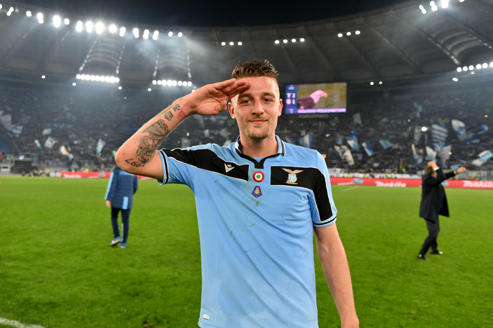 |
Suíça
A Suíça participou de sua 11ª edição da Copa do Mundo de futebol em 2018.
As melhores participações da Suíça foram nas Copas do Mundo de 1934, 1938 e 1954
quando a seleção suíça chegou às quartas-de-final.
| Técnico | Principais Jogadores |
|---|---|
Murat Yakın  |
Xherdan Shaqiri  |
Granit Xhaka  |
|
Yann Sommer  |
Camarões
A seleção de Camarões participou em 2014 de sua sétima Copa do Mundo de futebol.
O melhor resultado da seleção de Camarões em Copas do Mundo foi em 1990,
quando a equipe de Roger Milla chegou às quartas-de-final na Copa do Mundo da Itália.
| Técnico | Principais Jogadores |
|---|---|
Rigobert Song  |
Aboubakar 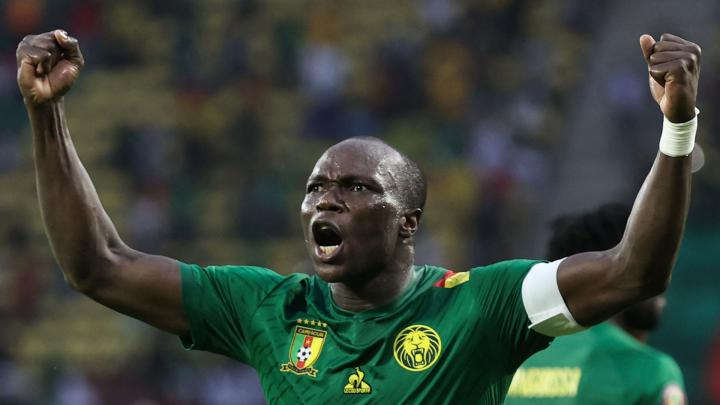 |
André Onana  |
|
Eric Maxim Choupo-Moting |
Seleção do Grupo F
Bélgica
A seleção da Bélgica chegou a participar de seis edições seguidas da Copa do Mundo (entre 1982 a 2002).
Na Eurocopa, o campeonato europeu de seleções, a Bélgica foi vice-campeã do torneio em 1980 e terceiro lugar em 1972.
| Técnico | Principais Jogadores |
|---|---|
Roberto Martinez  |
Romelu lukaku  |
Eden Hazard  |
|
Thibaut Courtois  |
Canadá
o Canadá vai disputar a Copa do Mundo pela segunda vez em sua história.
A última e única participação do país foi em 1986, quando o Mundial foi disputado no México.
| Técnico | Principais Jogadores |
|---|---|
John Herdman  |
Tosaint Antony  |
| Akindele 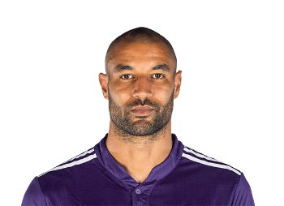 |
|
Máxime Crepean  |
Marrocos
das Copas do Mundo de 1970, 1986, 1994, 1998 e participou da de 2018 na Rússia,
tendo a melhor posição obtida como 11º lugar em 1986.
| Técnico | Principais Jogadores |
|---|---|
Valid Halilhodzic  |
Youssef El-Arabi  |
Karim El Ahmadi  |
|
Achraf Lazaar  |
Croácia
A seleção croata participa de sua quinta edição da Copa do Mundo de futebol em 2018.
Em 1998 a Croácia participou de sua primeira Copa do Mundo de futebol como país independente
da Iugoslávia e chegou ao 3º lugar da competição, sua melhor participação em mundiais até então.
| Técnico | Principais Jogadores |
|---|---|
Zlatko Dalic  |
Luca Modric  |
Mario Pasalic  |
|
Dejan Lovren |
Seleções do Grupo E
Espanha
A Espanha participou de 15 edições
e tem o total de 1 titulo, sendo campeão em 2010.
| Técnico | Principais Jogadores |
|---|---|
Luis Enrique Martínez García  |
Arnau Tenas 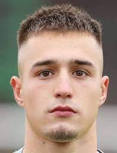 |
| Pau Torres 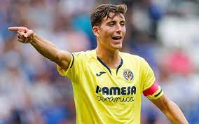 |
|
| Aymeric Laporte 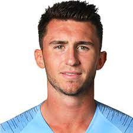 |
Sérvia
A Alemanha participou de 19 edições
e tem o total de 4 titulos, sendo campeão pela última vez em 2014.
| Técnico | Principais Jogadores |
|---|---|
| Hans-Dieter Flick 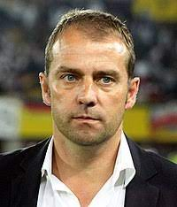 |
Joshua Kimmich 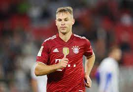 |
| Florian Neuhaus 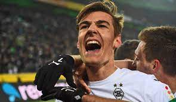 |
|
| Julian Brandt 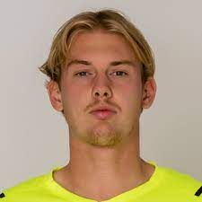 |
Japão
OJapão participou de 6 edições,
chegando as oitavas de final e sendo eliminados.
| Técnico | Principais Jogadores |
|---|---|
| Hajime Moriyasu 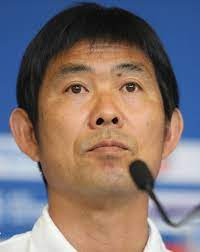 |
Yuto Nagatomo 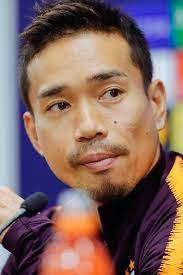 |
| Maya Yoshida 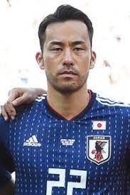 |
|
| Kensuke Nagai 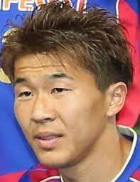 |
Seleção do Grupo H
Portugal
Portugal tem 7 participações em Copas do mundo.
Apesar de nunca ter ganhado o titulo em uma Copa do mundo,
Portugal alcançou Terceiro lugar na Copa 1966, e o Quarto lugar
na Copa de 2006 (após perder o terceiro lugar para a Alemanha).
| Técnico | Principais Jogadores |
|---|---|
Fernando Santos |
Cristiano Ronaldo |
André Silva |
|
Rafael Leão |
Gana
Gana já acumula 3 participações em Copas do mundo.
Apesar das 3 participações em Copas do mundo,
Gana nunca alcançou grandes resultados,
sendo eliminada logo nas primeiras fases.
| Técnico | Principais Jogadores |
|---|---|
Otto Addo |
Jordan Ayew |
Thomas Partey |
|
Andy Yiadom |
Uruguai
Uruguai tem 13 participações em Copas do mundo.
Atualmente o Uruguai possui 2 Titulos ( 1930, 1950 ),
e acumula boas participações tendo ficado 3 vezes em quarto lugar.
| Técnico | Principais Jogadores |
|---|---|
Diego Alonso |
Luis Suárez |
Edinson Cavani |
|
Diego Godín |
Coreia do Sul
A seleção da Coreia do Sul já acumula 10 participações em Copas do mundo.
Apesar das 10 participações, a seleção Sul Coreana
tem apenas um resultado significativo,
tendo alcançado o quarto lugar no ano de 2002.
| Técnico | Principais Jogadores |
|---|---|
Paulo Bento |
Ui-jo Hwang |
Heung-min Son |
|
Young-wook Cho |